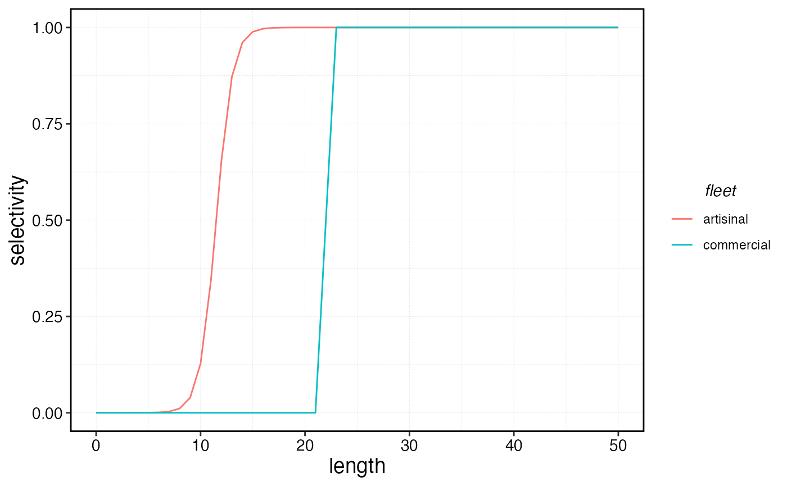
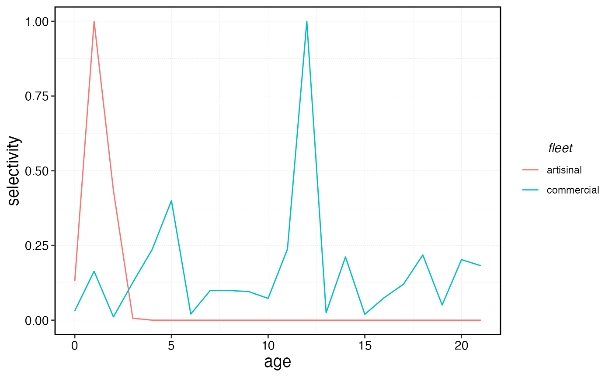

library(marlin)
library(tidyverse)
#> ── Attaching core tidyverse packages ──────────────────────── tidyverse 2.0.0 ──
#> ✔ dplyr 1.1.4 ✔ readr 2.1.5
#> ✔ forcats 1.0.0 ✔ stringr 1.5.1
#> ✔ ggplot2 3.5.2 ✔ tibble 3.2.1
#> ✔ lubridate 1.9.4 ✔ tidyr 1.3.1
#> ✔ purrr 1.0.4
#> ── Conflicts ────────────────────────────────────────── tidyverse_conflicts() ──
#> ✖ dplyr::filter() masks stats::filter()
#> ✖ dplyr::lag() masks stats::lag()
#> ℹ Use the conflicted package (<http://conflicted.r-lib.org/>) to force all conflicts to become errors
theme_set(marlin::theme_marlin())In the fisheries literature, “selectivity” generally refers to the vulnerability of different lengths or ages of fish to fishing mortality. The form of selectivity can have a big impact, depending on for example whether fish become vulnerable to the fishery before the age at maturity, or whether market pressures produce “dome shaped” selectivity in which larger fish are avoided.
marlin allows users to simulate selectivity in a number
of ways. Importantly, marlin uses what is basically a form
of “contact” selectivity, meaning the selectivity of the gear if it
happens to interact with a given individual of a given size. This is
different from the “population selectivity”, which is the interaction of
contact selectivity and the availability of the organism itself. In
marlin, the availability of organisms of different sizes
can vary based on habitat and ontogenetic shifts, resulting in a net
population selectivity.
Importantly, stock assessments generally estimate population selectivity. So, be cautious in inputting estimated selectivities into marlin as contact selectivities, since it might end up double counting the effects of the actual availability of the species.
Logistic Selectivity
We’ll start by setting up a basic system with one species and two fleets, each with logistic selectivity
Both fleets have logistic selectivity, but the commerical fleet has a higher length at initial selectivity and a steeper selectivity ogive.
For the artisinal fleet, we specificy the units of selectivity based
on proportions of the length at 50% maturity
(sel_unit = "p_of_mat"). In this form
sel_start = 0.5 indicates that length at 50% selectivity is
at 50% of the length at 50% maturity, and the length at 95% maturity is
length at 50% maturity times sel_start + set_delta.
Setting sel_unit = "p_of_mat" is easier when running
bulk simulations.
For more individual simulations, setting
sel_unit = "length can be more intuitive, since selecitivy
is in units of length then.
So, in the commercial case shown below, the length at 50% selectivity
is set to sel_start = 22 and the length at 95% selectivity
is sel_start + sel_delta.
resolution <- 10
years <- 50
fauna <-
list(
"snapper" = create_critter(
scientific_name = "lutjanus griseus",
linf = 42,
adult_diffusion = 10,
fished_depletion = .25,
resolution = resolution
)
)
#> Warning in f(names[[col]]): NAs introduced by coercion
fleets <- list(
"artisanal" = create_fleet(list(
"snapper" = Metier$new(
critter = fauna$snapper,
p_explt = 0.5,
sel_unit = "p_of_mat",
sel_start = 0.5,
sel_delta = 0.1
)
), resolution = resolution),
"commercial" = create_fleet(list(
"snapper" = Metier$new(
critter = fauna$snapper,
p_explt = 0.5,
sel_unit = "length",
sel_start = 22,
sel_delta = .01
)
), resolution = resolution)
)
sels <- data.frame(
artisinal = fleets$artisanal$metiers$snapper$sel_at_length,
commercial = fleets$commercial$metiers$snapper$sel_at_length,
length = as.numeric(colnames(fauna$snapper$length_at_age_key))
)
sels |>
pivot_longer(-length, names_to = "fleet", values_to = "selectivity") |>
ggplot(aes(length, selectivity, color = fleet)) +
geom_line()
Double Normal
Contact selectivity is not always asymptotic; fish may become less vulnerable to gears as they get bigger for physical (e.g. no longer likely to get tangled in nets) or market reasons (released if too large, though users would need to then consider whether released fish survive).
The most common strategy to model this behavior is a so-called “double normal” model, in which selectivity is modeled using the intersection of two normal distributions.
There are many types of double normal functions, but we employ a fairly simple form used in Carruthers et al. 2014.
The parameters of the double normal in this form are
The smallest length at full selectivity
The smallest length at 0.05 selectivity
The selectivity at Linf
In this case, the artisinal fleet will be specified with
sel_unit = "p_of_mat"
The smallest length at full selectivity is then a function of
sel_start + sel_delta
The smallest length at 0.05 selectivity is set based on
sel05_anchor (in this case units of proportions of the
length at 50% maturity). Note that this must be less than the size at
full selectivity
The selectivity at linf is set to 0, meaning that largest fish are no longer captured by the gear.
For the commerical fleet, we set sel_unit = "length" and
so the values of the parameters are adjusted accordingly. For the
commercial fleet, selectivity at Linf is 0.5, meaning lower than the
peak, but not zero.
fleets <- list(
"artisanal" = create_fleet(list(
"snapper" = Metier$new(
critter = fauna$snapper,
sel_form = "double_normal",
p_explt = 0.5,
sel_unit = "p_of_mat",
sel_start = 0.5,
sel_delta = 0.1,
sel05_anchor = 0.1,
sel_at_linf = 0
)
), resolution = resolution),
"commercial" = create_fleet(list(
"snapper" = Metier$new(
critter = fauna$snapper,
sel_form = "double_normal",
p_explt = 0.5,
sel_unit = "length",
sel_start = 10,
sel_delta = 0.1,
sel05_anchor = 5,
sel_at_linf = 0.5
)
), resolution = resolution)
)
sels <- data.frame(
artisinal = fleets$artisanal$metiers$snapper$sel_at_length,
commercial = fleets$commercial$metiers$snapper$sel_at_length,
length = as.numeric(colnames(fauna$snapper$length_at_age_key))
)
sels |>
pivot_longer(-length, names_to = "fleet", values_to = "selectivity") |>
ggplot(aes(length, selectivity, color = fleet)) +
geom_line()Manual Selectivity
Selectivity can also be manually supplied. In this case we’ll pretend
we have a separately estimated selectivity for the commercial fleet by
setting sel_form = "manual" and passing
sel_at_age values to the commercial fleet.
commercial_selectivity <- rlnorm(length(fauna$snapper$ages))
commercial_selectivity <- commercial_selectivity / max(commercial_selectivity)
fleets <- list(
"artisanal" = create_fleet(list(
"snapper" = Metier$new(
critter = fauna$snapper,
sel_form = "double_normal",
p_explt = 0.5,
sel_unit = "p_of_mat",
sel_start = 0.5,
sel_delta = 0.1,
sel05_anchor = 0.1,
sel_at_linf = 0
)
), resolution = resolution),
"commercial" = create_fleet(list(
"snapper" = Metier$new(
critter = fauna$snapper,
sel_form = "manual",
sel_at_age = commercial_selectivity
)
), resolution = resolution)
)
sels <- data.frame(
artisinal = fleets$artisanal$metiers$snapper$sel_at_age,
commercial = fleets$commercial$metiers$snapper$sel_at_age,
age = fauna$snapper$ages
)
sels |>
pivot_longer(-age, names_to = "fleet", values_to = "selectivity") |>
ggplot(aes(age, selectivity, color = fleet)) +
geom_line()